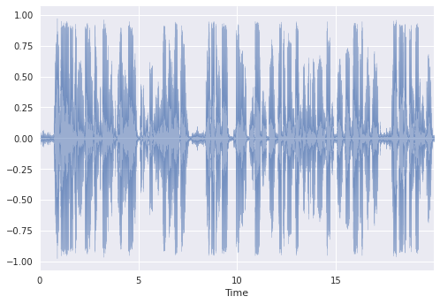
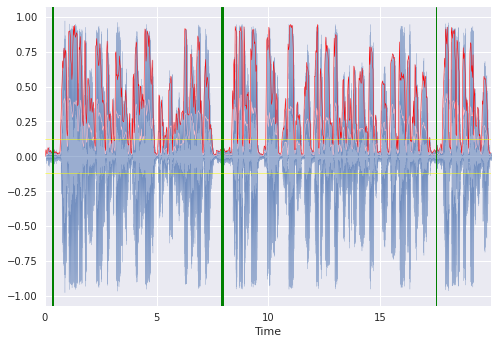
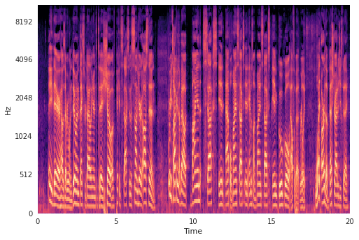

Low Energy Audio Segments
This post outlines a simple algorithm for identifying low energy audio segments. This post assumes basic knowledge of digital signal processing (DSP).
Digital Signal Processing (DSP)
If you don’t know DSP, I’d suggest taking a few courses to learn it as the applications are endless. Coursera offers exceptional foundational and useful music applications courses. In addition, I recommend checking out Jack Schaedler’s compact primer.
Root Mean Square (RMS)
We will use RMS to proxy the de facto time-domain signal energy calculation. They measure different spins of approximately the same thing, the $L^2$ or euclidean norm.
In order to see how RMS changes over time we can apply a framed version of the calculation yielding a new signal which captures how the RMS of our signal changes over time.
When I say “framed” I mean we’re considering $n$ audio samples in a single calculation, storing the result, shifting or hopping over by $m$ samples, and then repeating the process until we traverse the entire signal.
Why not just use a framed version of the energy calculation? I’m using RMS because a framed version of it is already implemented in the audio package I’m importing. Work smart, not hard :).
Amplitude Envelope (AE)
The AE is also a framed calculation and is simply the maximum value of a given frame. This can be interpreted as measuring a spin of the $L^\infty$ or infinity norm. Its calculation yields a signal that traces the upper envelope of the original signal over time. Valerio Velardo’s implementation is all we need.
import numpy as np
def amplitude_envelope(x=np.array([]), frame_size=2048, hop_length=512):
ae = [max(x[i: i + frame_size]) for i in range(0, x.size, hop_length)]
return np.array(ae)
AE + RMS
We combine these two measures to form our final algorithm. We set the frame and hop sizes that will be shared by both measures and carry out the calculations. We use the AE as our measure of how the signal’s energy changes over time, and the standard deviation of the framed RMS as the threshold.
Everytime the AE dips below the standard deviation of the framed RMS, we mark the beginning of a potential segment. Once it breaks back over the threshold, we mark the end of a segment and add that segment to a temporary result buffer. Once we’ve done this for the entire AE, we sort the segments by the length of the segment, descending.
Demo
Here’s some fake audio with its waveform:
Fig. 1

Here’s the same fake audio waveform with the aforementioned calculations overlaid:
Fig. 2

Fig 2. shows the time-domain waveform in blue, the AE in red, RMS in pink, +/- one standard deviation of RMS in yellow, and three segment midpoints found in green where thickness indicates a longer low energy segment.
Here’s something a bit less basic, a mel-spectrogram of the fake audio:
Fig. 3

Comparing Fig 2. to Fig 3., energy lacking in the time-domain corresponds to energy lacking in the frequency-domain. Low-to-no speaking energy, as conveyed by low amplitudes in the time-domain, corresponds to a lack of vocal harmonics in the frequency-domain. This conservation of energy between domains is formally captured by Parseval’s theorem.
Improvements
There are infinite improvements that can be made. The algorithm is as basic as it gets and is certainly overfitting to a specific type of audio. In some cases it will suffice to hand-engineer additional information, e.g., human voice frequency (voice band) detection. In other cases, manually engineering features will have less-of, if any effect at all (think background music). I believe the more robust solutions will result from applied ML / AI / RL algorithms that are able to generalize to a broader spectrum of audio, of course, requiring larger amounts quality data.